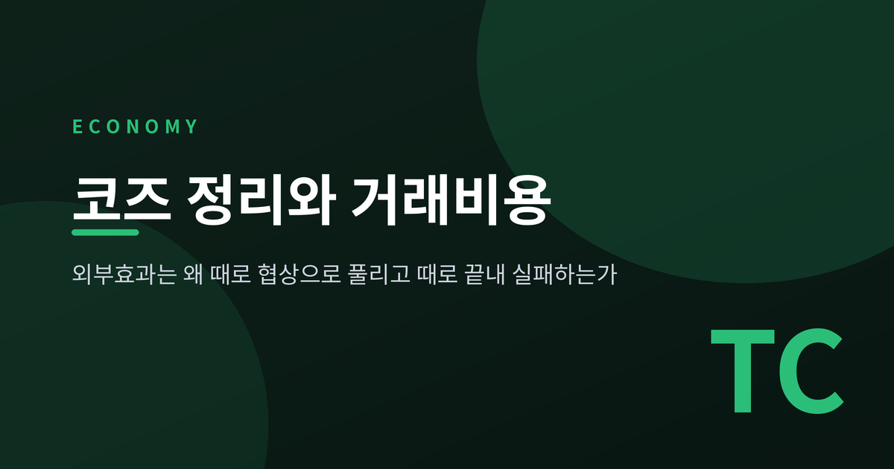
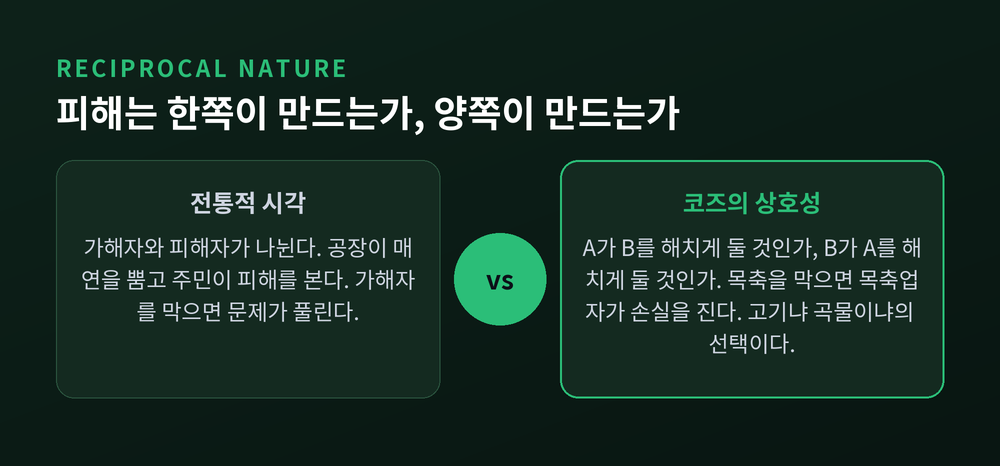
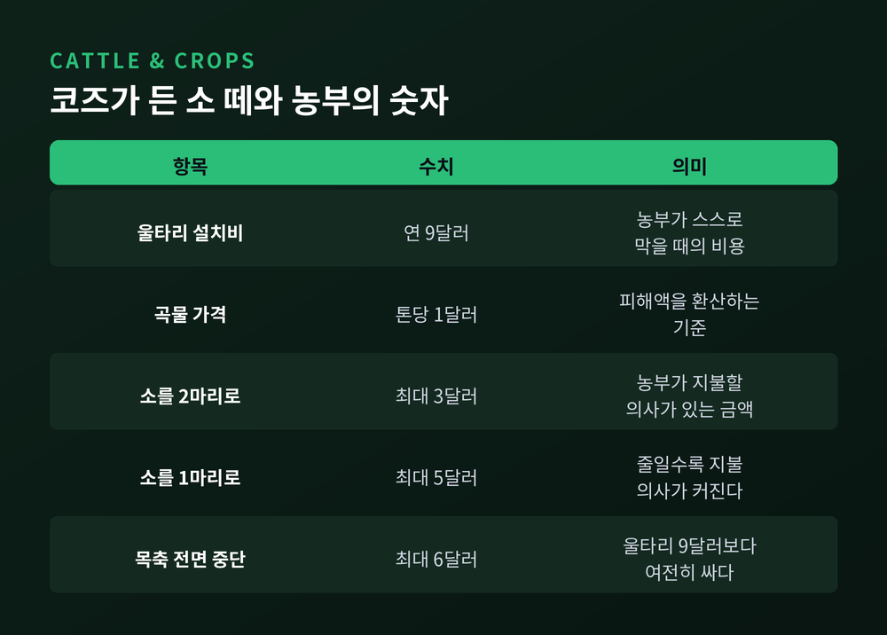
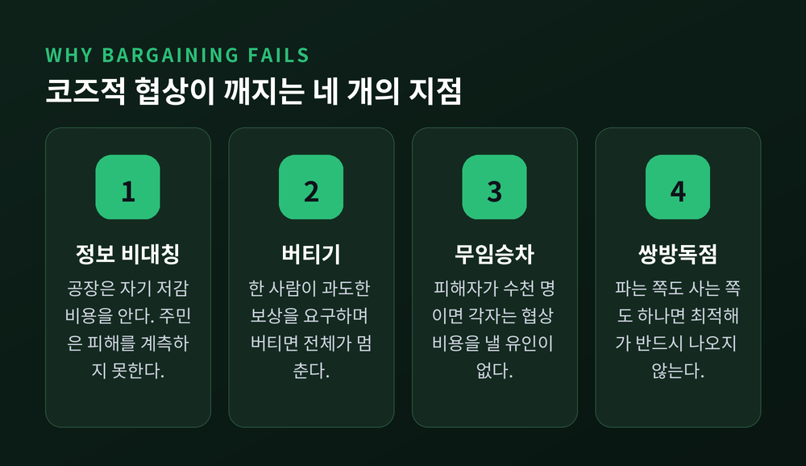
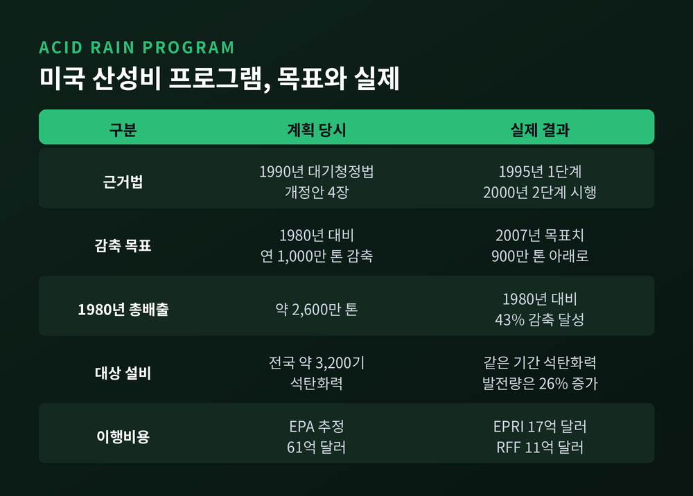
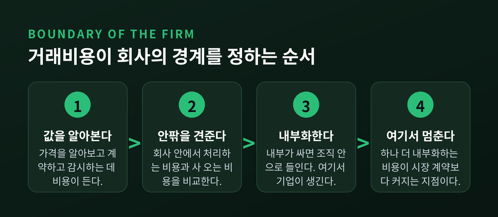

이번 글에서는 코즈 정리와 거래비용을 정리해 보겠습니다. 공장 매연이나 이웃의 소음 같은 외부효과가 왜 어떤 때는 당사자끼리의 협상만으로 깔끔하게 정리되고, 어떤 때는 끝내 실패해 정부가 개입하게 되는지가 이 글의 질문입니다. 로널드 코즈의 두 논문에서 출발해 배출권거래제라는 현실 정책까지, 그리고 마지막에는 회사의 경계선까지 이어보려 합니다.

외부효과를 이야기할 때 우리는 보통 가해자와 피해자를 먼저 나눕니다. 공장이 매연을 뿜고 주민이 피해를 본다, 이런 식입니다.
코즈는 이 구도부터 의심했습니다. 그는 문제가 상호적 성격을 갖는다고 썼습니다. 결정해야 할 진짜 질문은 A가 B에게 피해를 입히도록 허용할 것인가, 아니면 B가 A에게 피해를 입히도록 허용할 것인가라는 것입니다.
소 떼가 이웃 농부의 작물을 밟습니다. 목축업자를 막으면 이번엔 목축업자가 손실을 봅니다. 일부 소가 반드시 이탈한다면, 고기 공급을 늘리는 일은 곡물 공급을 줄이는 대가로만 가능합니다. 코즈의 표현대로 선택의 본질은 명확합니다. 고기냐 곡물이냐.
그가 1960년 논문에서 든 판례가 이 시각을 잘 보여줍니다. Sturges v Bridgman(1879) 사건에서 제과업자는 오랫동안 같은 자리에서 기계를 돌렸습니다. 그 옆에 의사가 나중에 진료실을 지었고, 진동과 소음 때문에 진료가 불가능해졌습니다. 법원은 제과업자에게 기계 사용 중지를 명했습니다.
코즈가 주목한 것은 판결의 승패가 아닙니다. 그 판결이 곧 두 부지의 재산권을 어떻게 나눌지 정한 행위였다는 점입니다.
Bryant v Lefever 사건은 더 노골적입니다. 한 이웃이 벽을 세우자 다른 이웃의 굴뚝에서 연기가 역류했습니다. 코즈는 이렇게 정리했습니다. "연기 피해는 벽을 세운 사람과 불을 지핀 사람 양쪽이 함께 일으킨 것이다."

여기서 그 유명한 명제가 나옵니다.
노벨위원회의 정식화를 그대로 옮기면 이렇습니다. 재산권이 명확히 정의되고, 이전 가능하며, 권리를 한 사람에서 다른 사람에게 넘기는 계약의 거래비용이 0이라면, 자원의 사용은 그 권리가 애초에 누구에게 배분되었는지에 의존하지 않습니다. 최초 배분이 비효율적이었다면 자발적 계약을 통해 더 나은 결과가 저절로 실현됩니다. 계약에 비용이 들지 않고 양쪽 모두 이득을 보기 때문입니다.
코즈가 든 숫자를 보면 감이 옵니다. 농부 쪽 울타리의 연간 설치비는 9달러, 곡물은 톤당 1달러입니다. 소가 3마리일 때 농부는 2마리로 줄여주면 최대 3달러, 1마리로 줄여주면 최대 5달러, 목축을 아예 접으면 최대 6달러까지 낼 의사가 있습니다.
울타리 9달러와 이 금액들을 견주는 순간, 누구에게 권리가 있느냐와 무관하게 가장 값싼 해법이 드러납니다. 소를 막을 권리가 농부에게 있다면 목축업자가 돈을 내고 사 오면 되고, 반대라면 농부가 돈을 내고 사 오면 됩니다. 사회 전체가 치르는 총비용은 같습니다.
한 가지 덧붙이겠습니다. '코즈 정리'라는 이름은 코즈가 붙인 것이 아닙니다. 조지 스티글러가 1966년 자신의 교과서 『가격이론』에서 처음 '정리'라고 명명하고 퍼뜨렸습니다. 코즈 본인은 논문에서 그 표현을 쓴 적이 없습니다.

이 대목이 흥미롭습니다.
코즈는 1988년 저서 『기업, 시장, 그리고 법』에서 이렇게 못박았습니다. 거래비용이 0인 세계가 흔히 '코즈적 세계'라 불려왔지만, 진실과 이보다 더 먼 것은 없다고요. 그것은 현대 경제이론의 세계이며, 자신은 경제학자들을 그 세계에서 나오게 하려 했다는 것입니다.
노벨위원회조차 이를 "다소 역설적"이라고 표현했습니다. 코즈 분석의 본론은 거래비용이 0일 때가 아니라 거래비용이 결코 0이 아니라는 사실에 있었기 때문입니다. 거래비용 없는 세계는 어디까지나 가상의 비교 기준입니다.
정리하자면 이렇습니다. 예전에는 코즈 정리를 "정부 개입 없이 시장이 알아서 푼다"는 주장으로 읽었습니다. 지금은 그 반대로 읽는 편이 원저자의 의도에 가깝습니다. 협상이 왜 실패하는지를 보라는 초대장에 가깝습니다.
현실의 거래비용은 크게 세 갈래입니다. 정보를 얻는 비용, 협상하는 비용, 합의를 집행하고 감시하는 비용입니다. 이것들이 협상을 무너뜨리는 방식은 대략 넷으로 나뉩니다.
여기에 더해, 당사자가 셋 이상이면 거래비용이 0이어도 안정적 합의가 성립하지 않을 수 있다는 연구 계열도 있습니다. 다만 이 쟁점은 학계에서 아직 논쟁 중입니다.

이론만으로는 답이 나오지 않습니다. 실제로 확인해 본 사람이 있습니다.
법학자 로버트 엘릭슨은 캘리포니아 북부 샤스타 카운티를 조사했습니다. 이곳은 역사적 우연으로 개방목축구역과 폐쇄목축구역이 뒤섞인 지역입니다. 개방구역에서는 농부가 소를 막을 울타리를 칠 책임을 지고, 폐쇄구역에서는 목장주가 소를 가둘 책임을 집니다. 코즈의 우화를 검증하기에 이보다 좋은 조건은 드뭅니다.
결과는 두 갈래였습니다.
책임 규칙이 달라져도 울타리의 품질은 달라지지 않았습니다. 코즈가 예측한 불변성과 일치합니다.
그런데 이유가 코즈의 설명과 달랐습니다. 주민들은 자기 지역의 가축 무단침입 법규를 상당히 모르고 있었습니다. 이웃들은 법이 아니라 비공식 규범과 자력구제로 분쟁을 처리했습니다. 소가 넘어오면 이웃에게 말하고, 다음에 갚고, 심하면 관계를 끊었습니다.
결과는 코즈가 맞혔고, 과정은 빗나갔습니다. 협상은 있었지만 그것은 계산기를 두드리는 협상이 아니라 오래 이웃해 살아온 사람들의 규범이었습니다.
거래비용을 줄일 수 없다면, 정부가 개입하는 길밖에 없어 보입니다. 전통적 처방은 피구세입니다. 외부효과를 낳는 활동에 세금을 물려 사회적 비용을 내부화합니다. 배출원이 많고 넓게 퍼져 있을 때 행정비용이 낮고 세수까지 생긴다는 장점이 있습니다.
그런데 제3의 길이 있습니다. 정부가 총량만 정하고, 누가 얼마나 줄일지는 당사자들끼리 거래하게 하는 방식입니다. 코즈적 협상을 정부가 설계로 싸게 만들어주는 셈입니다.
첫 대규모 실험은 미국이었습니다. 1990년 대기청정법 개정안 4장에 근거한 산성비 프로그램입니다.
목표를 넘겨 달성하고 비용은 예상의 몇 분의 일에 그쳤습니다. 배출권 거래를 택한 덕에 대안 대비 15~90%를 아꼈다는 평가가 나옵니다.

유럽은 규모가 다릅니다. EU 배출권거래제(EU ETS)는 2005년 출범해 지금은 4기(2021~2030년)를 지나고 있습니다.
2026년 총량 상한은 고정배출원과 해운을 합쳐 약 11억 8,540만 톤입니다. 2025년 평균 경매가는 톤당 73.43유로, 유통시장 평균가는 74.35유로였습니다. 대상은 고정 설비 8,704곳, 항공사 393곳, 해운사 3,313곳입니다. 제도 도입 이후 2025년 말까지 누적 수입은 2,657억 유로에 달합니다.
성과도 분명합니다. 2025년 초 기준 대상 설비의 배출량은 2005년 대비 약 50% 줄었습니다. 2030년 목표는 62% 감축입니다.
여기서 눈여겨볼 것은 집행 장치입니다. 배출권을 제출하지 않으면 톤당 100유로의 과징금을 물고, 그만큼의 배출권을 추가로 사서 내야 하며, 위반 사업자 명단이 공개됩니다. 배출량 보고서는 독립 검증기관의 검증을 거칩니다. 코즈가 말한 집행비용을 제도가 대신 떠안는 구조입니다.
한국도 2015년 1월 1일 배출권거래제를 시작했습니다. 2026년부터 제4차 계획기간(2026~2030년)에 들어가며, 발전 부문 유상할당이 50%까지 확대되고 전력 벤치마크 계수가 40% 강화됩니다. 다만 가격은 다릅니다. 2026년 초 기준 국내 배출권 가격은 1만 원대에 머물렀습니다. 유럽의 73유로대와는 상당한 거리가 있습니다.
한계도 인정해야 합니다. 총량을 어디에 그을지, 무상할당을 얼마나 줄지는 결국 정치의 영역입니다. 이 지점에서 다시 협상비용이 발생합니다.
코즈의 이야기는 여기서 끝나지 않습니다. 오히려 출발점으로 돌아갑니다.
그는 1960년 논문보다 23년 앞선 1937년, 스물여섯 살에 「기업의 본질」을 발표했습니다. 질문은 단순했습니다. 왜 기업이라는 조직이 존재하는가. 왜 각 기업은 특정한 규모를 갖는가.
시장이 그렇게 효율적이라면, 모든 일은 개인 간 계약으로 처리되어야 합니다. 그런데 현실에서는 자원의 상당 부분이 의도적으로 가격기구에서 빠져나와 회사 안에서 명령으로 조정됩니다.
코즈의 답이 곧 거래비용이었습니다.
기업은 어떤 일을 내부에서 처리하는 총비용이 시장에서 사고파는 비용보다 낮을 때 생겨납니다. 그리고 추가로 한 가지 일을 더 내부에서 처리하는 비용이 시장 계약보다 커지는 지점까지 확장하다 멈춥니다. 그 지점이 회사의 경계입니다.
노벨위원회는 여기에 한 문장을 덧붙였습니다. 거래비용이 0이라면 기업은 애초에 생기지 않는다고요. 모든 배분이 개인 간 단순 계약으로 이루어질 테니까요.
계약의 종류도 갈립니다. 의무를 전부 명시한 계약이 있고, 일부러 불완전하게 남겨 한쪽의 결정 재량을 두는 계약이 있습니다. 후자의 대표가 고용계약입니다. 지시하고 명령할 여지가 남아 있습니다. 기업이란 이런 '열린 계약'들의 묶음이 만들어내는 재량 그 자체입니다.
올리버 윌리엄슨은 이를 세 가지 요인으로 체계화했습니다. 자산 특수성, 불확실성, 거래 빈도입니다. 특히 자산 특수성이 핵심입니다. 특정 거래에만 맞춘 설비나 인력에 투자하면 그 투자는 다른 곳에서 가치가 급락합니다. 상대가 이를 알고 재협상을 요구하면 발이 묶입니다. 이른바 홀드업 문제입니다. 그래서 자산 특수성이 높을수록 기업은 시장에서 사 오는 대신 수직통합을 택합니다.

노벨위원회는 이 두 논문이 하나의 원을 그린다고 정리했습니다.
거래비용이 0이면 기업은 불필요해지고, 권리 배분에 관한 입법도 무의미해집니다. 두 결론이 정확히 평행입니다. 뒤집으면, 거래비용이 결코 0이 아니라는 사실 자체가 계약 형태의 다양성도, 온갖 입법도, 기업의 존재도 설명합니다. 거래비용이 계약을 완전히 가로막는 자리에는 다른 제도가 들어섭니다. 기업이거나, 개정된 법률이거나.
정리하면 이렇습니다.
코즈 정리는 시장이 만능이라는 주장이 아닙니다. 그 반대에 가깝습니다. 재산권이 명확하고 당사자가 소수이며 정보가 대칭이면 협상은 스스로 답을 찾습니다. 그러나 피해자가 수천 명으로 흩어지고, 손해를 입증하기 어렵고, 합의를 지킬 방법이 마땅치 않으면 협상은 시작조차 되지 않습니다.
그럴 때 등장하는 것이 피구세이고, 배출권거래제이고, 규제이고, 그리고 회사입니다. 이것들은 시장의 실패를 메우는 임시방편이 아니라 거래비용이라는 제약 아래에서 선택된 서로 다른 제도적 답안입니다.
코즈가 남긴 문장 하나로 닫겠습니다. "권리를 행사하는 비용은 언제나 다른 곳에서 발생하는 손실이다."
외부효과 문제에 깨끗한 정답이 있느냐고 물으신다면, 없다고 답하겠습니다. 다만 어떤 비용을 누가 치를지를 정하는 일은 남습니다. 그 선택을 조금 더 또렷하게 보게 해준 것이 코즈의 기여라고 생각합니다.